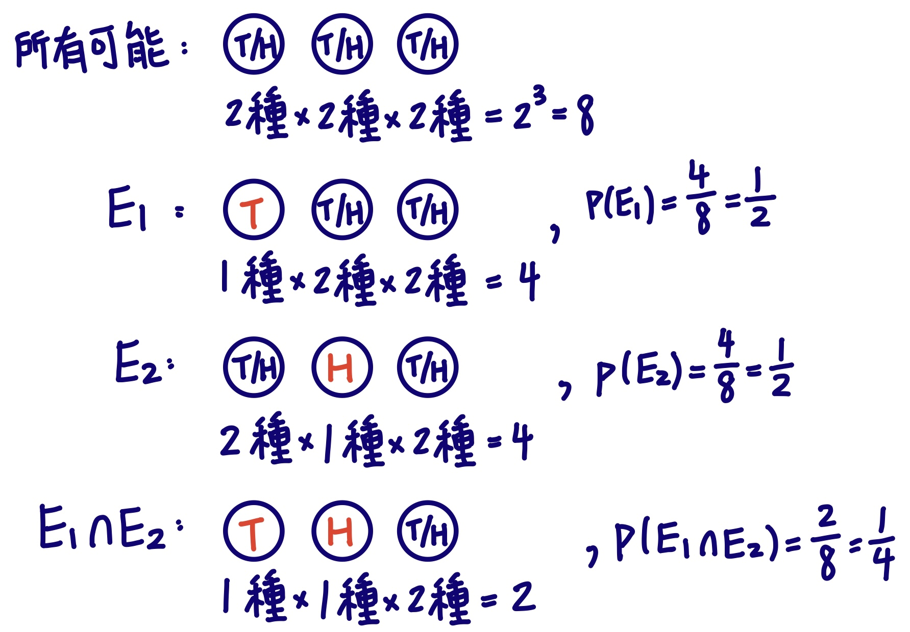
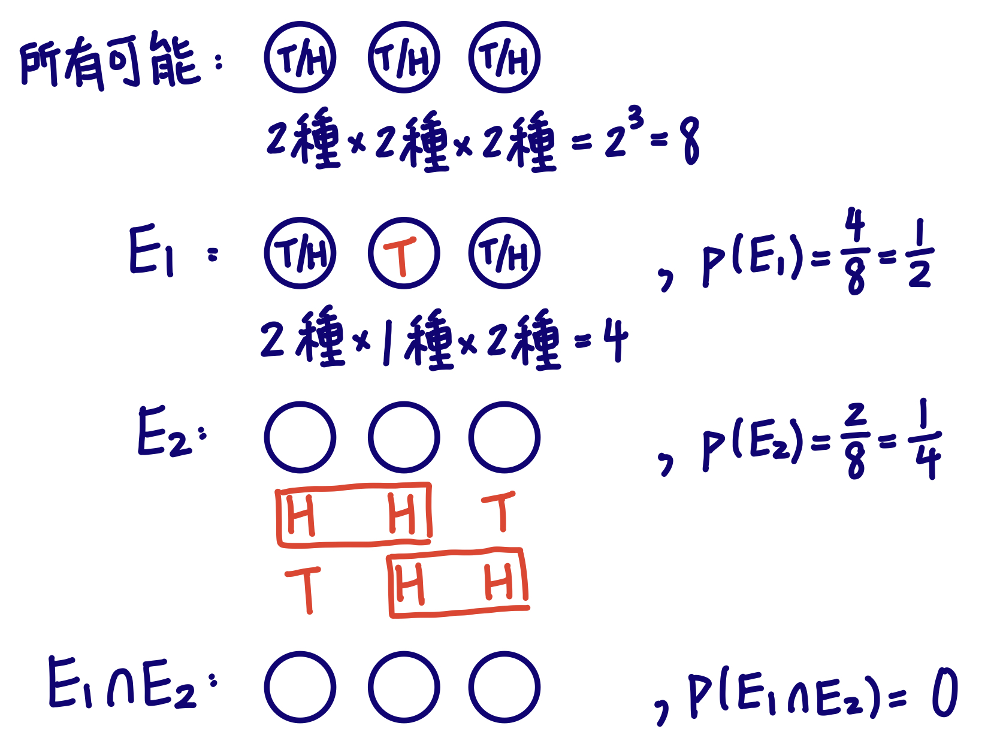
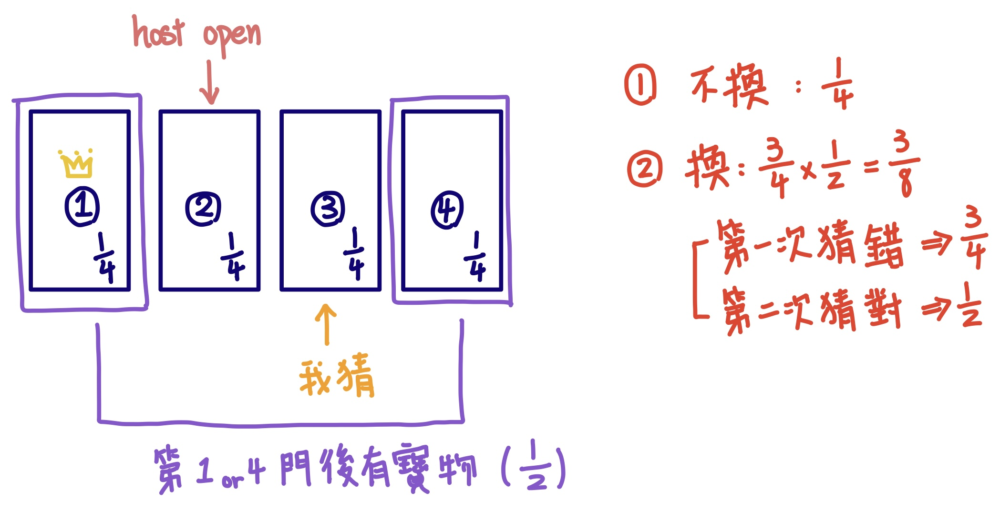
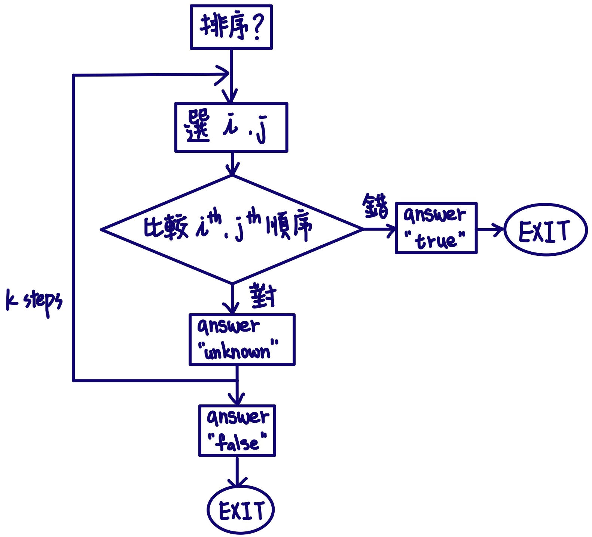
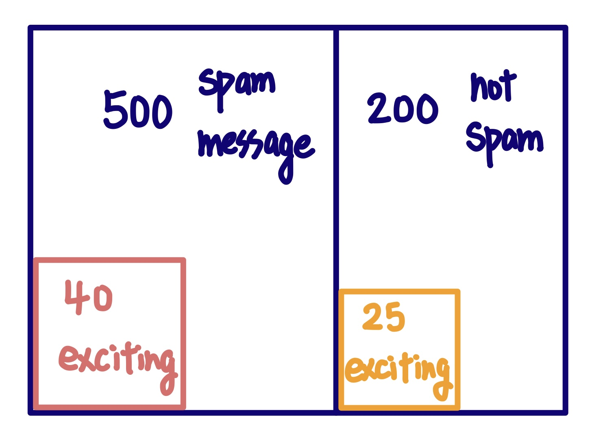
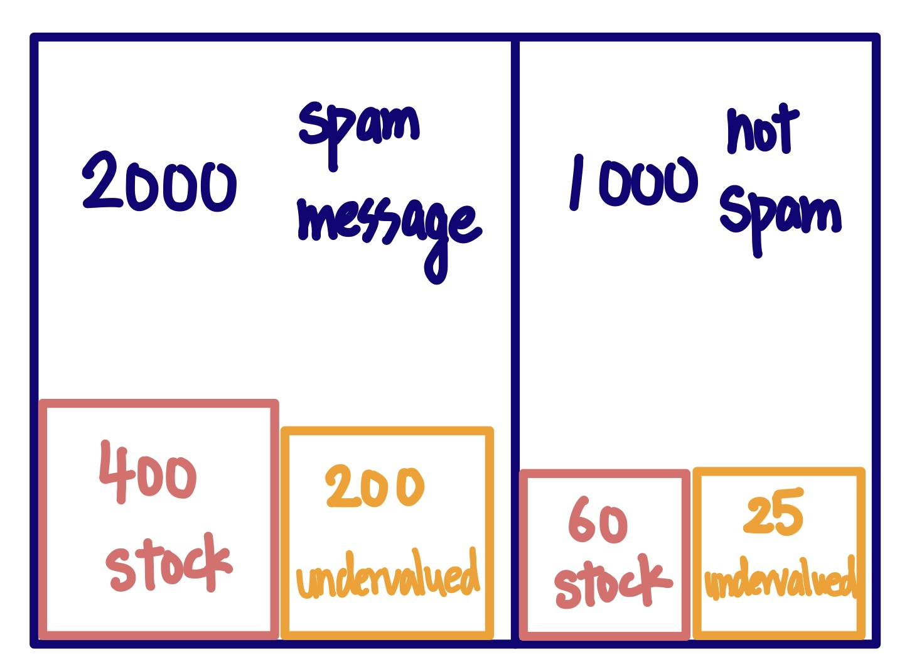

HW7 詳解
問題1(A)
page 477, chapter 7.1 Exercises 42(A)
Two events $E_1$ and $E_2$ are called independent if $p(E_1 \cap E_2)$ = $p(E_1)p(E_2)$.
For each of the following pairs of events, which are subsets of the set of all possible outcomes
when a coin is tossed three times, determine whether or not they are independent.
-
$E_1$: tails comes up with the coin is tossed the first time;
$E_2$: heads comes up when the coin is tossed the second time.
問題1(A): page 477, chapter 7.1 Exercises 42(A)
Two events $E_1$ and $E_2$ are called independent if $p(E_1 \cap E_2)$ = $p(E_1)p(E_2)$.
For each of the following pairs of events, which are subsets of the set of all possible outcomes
when a coin is tossed three times, determine whether or not they are independent.
-
$E_1$: tails comes up with the coin is tossed the first time;
$E_2$: heads comes up when the coin is tossed the second time.

問題1(A): page 477, chapter 7.1 Exercises 42(A)
Two events $E_1$ and $E_2$ are called independent if $p(E_1 \cap E_2)$ = $p(E_1)p(E_2)$.
For each of the following pairs of events, which are subsets of the set of all possible outcomes
when a coin is tossed three times, determine whether or not they are independent.
-
$E_1$: tails comes up with the coin is tossed the first time;
$E_2$: heads comes up when the coin is tossed the second time.
-
$E_1$ = { TTT, THH, THT, TTH }
$E_2$ = { THT, HHH, THH, HHT }
$E_1 \cap E_2$ = { THH, THT }
-
Intuitively, those should be independent, since the first event seems to have no influence
on the second. In fact we can compute as follows. First
$p(E_1) = 1/2$
and
$p(E_2) = 1/2$
by the symmetry of the coin tossing. Furthermore, $E_1 \cap E_2$ is the event that
the first two coins come up tails and heads
, respectively. Since there are four equally likely outcomes for the first two coin ($HH, HT, TH$ and $TT$),
$p(E_1 \cap E_2)$ = 1/4.Therefore
$p(E_1 \cap E_2) = 1/4 = (1/2)\cdot(1/2) = p(E_1)p(E_2)$
, so the events are indeed
independent.
問題1(B)
page 477, chapter 7.1 Exercises 42(B)
Two events $E_1$ and $E_2$ are called independent if $p(E_1 \cap E_2)$ = $p(E_1)p(E_2)$.
For each of the following pairs of events, which are subsets of the set of all possible outcomes
when a coin is tossed three times, determine whether or not they are independent.
-
b) $E_1$: the first coin comes up tails;
$E_2$: two, and not three, heads come up in a row.
問題1(B): page 477, chapter 7.1 Exercises 42(B)
Two events $E_1$ and $E_2$ are called independent if $p(E_1 \cap E_2)$ = $p(E_1)p(E_2)$
For each of the following pairs of events, which are subsets of the set of all possible outcomes
when a coin is tossed three times, determine whether or not they are independent.
-
b) $E_1$: the first coin comes up tails;
$E_2$: two, and not three, heads come up in a row.
.jpg)
問題1(B): page 477, chapter 7.1 Exercises 42(B)
Two events $E_1$ and $E_2$ are called independent if $p(E_1 \cap E_2)$ = $p(E_1)p(E_2)$
For each of the following pairs of events, which are subsets of the set of all possible outcomes
when a coin is tossed three times, determine whether or not they are independent.
-
b) $E_1$: the first coin comes up tails;
$E_2$: two, and not three, heads come up in a row.
-
$E_1$ = { TTT, THH, THT, TTH }
$E_2$ = { HHT, THH }
$E_1 \cap E_2$ = { THH }
-
b) Again
$p(E_1) = 1/2$.
For $E_2$, note that there are 8 equally likely outcomes for the
three coins, and in 2 of these cases $E_2$ occurs (namely $HHT$ and $THH$); therefore
$p(E_2) = 2/8 = 1/4$.
Thus $p(E_1)p(E_2) = (1/2)\cdot(1/4) = 1/8$.
Now $E_1 \cap E_2$ is the event that
the first coin comes up tails, and two but not three heads come up in a row.
This occurs precisely when the outcome is $THH$, so the probability is
1/8.
$p(E_1)p(E_2)$ = $p(E_1 \cap E_2)$
, so the events are
independent.
問題1(C)
page 477, chapter 7.1 Exercises 42(C)
Two events $E_1$ and $E_2$ are called independent if $p(E_1 \cap E_2)$ = $p(E_1)p(E_2)$.
For each of the following pairs of events, which are subsets of the set of all possible outcomes when a coin is tossed three times, determine whether or not they are independent.
-
c) $E_1$: the second coin comes up tails;
$E_2$: two, and not three, heads come up in a row.
問題1(C): page 477, chapter 7.1 Exercises 42(C)
Two events $E_1$ and $E_2$ are called independent if $p(E_1 \cap E_2)$ = $p(E_1)p(E_2)$.
For each of the following pairs of events, which are subsets of the set of all possible outcomes
when a coin is tossed three times, determine whether or not they are independent.
-
c) $E_1$: the second coin comes up tails;
$E_2$: two, and not three, heads come up in a row.

問題1(C): page 477, chapter 7.1 Exercises 42(C)
Two events $E_1$ and $E_2$ are called independent if $p(E_1 \cap E_2)$ = $p(E_1)p(E_2)$.
For each of the following pairs of events, which are subsets of the set of all possible outcomes
when a coin is tossed three times, determine whether or not they are independent.
-
c) $E_1$: the second coin comes up tails;
$E_2$: two, and not three, heads come up in a row.
-
$E_1$ = { HTH, HTT, TTT, TTH }
$E_2$ = { HHT, THH }
$E_1 \cap E_2$ = ∅
-
c) As in part (b),
$p(E_1) = 1/2$
and
$p(E_2) = 1/4$.
This time
$p(E_1 \cap E_2) = 0$
, since there is no way to get two heads in a row if the second coin comes up tails. Since
$p(E_1)p(E_2) \neq p(E_1 \cap E_2)$
, the events are
not independent.
問題2
page 477, chapter 7.1 Exercises 44
-
Suppose that instead of three doors, there are four doors in the Monty Hall puzzle.
-
What is the probability that you win by not changing once the host, who knows what is behind each door,
opens a losing door and gives you the chance to change doors?
-
What is the probability that you win by changing the door you select to one of the two remaining doors
among the three that you did not select?
問題2: page 477, chapter 7.1 Exercises 44
-
Suppose that instead of three doors, there are four doors in the Monty Hall puzzle.
-
What is the probability that you win by not changing once the host, who knows what is behind each door,
opens a losing door and gives you the chance to change doors?
-
What is the probability that you win by changing the door you select to one of the two remaining doors
among the three that you did not select?

問題2: page 477, chapter 7.1 Exercises 44
-
Suppose that instead of three doors, there are four doors in the Monty Hall puzzle.
-
What is the probability that you win by not changing once the host, who knows what is behind each door,
opens a losing door and gives you the chance to change doors?
-
What is the probability that you win by changing the door you select to one of the two remaining doors
among the three that you did not select?
You had a 1/4 chance of winning with your original selection. Just as in original problem, the
host's action did not change this, since he would act the same way regardless of whether your
selection was a winner or a loser.
Therefore you have a 1/4 chance of winning if you do not change.
This implies that there is a 3/4 chance of the prize's being behind one of the other doors. Since
there are two such doors and by symmetry the probabilities for each of them must be the same,
your chance of winning after switching is
half of 3/4, or 3/8.
問題3
page 494, chapter 7.2 Exercises 40
Devise a Monte Carlo algorithm that determines whether a permutation of the integers 1 through
$n$ has already been sorted (that is, it is in increasing order), or instead, is a random
permutation. A step of the algorithm should answer "true" if it determines the list is not
sorted and "unknown" otherwise. After $k$ steps, the algorithm decides that the integers are
sorted if the answer is "unknown" in each step. Show that as the number of steps increases,
the probability that the algorithm produces an incorrect answer is extremely small.
[Hint: For each step, test whether certain elements are in the correct order.
Make sure these tests are independent.]
問題3: page 494, chapter 7.2 Exercises 40
Devise a Monte Carlo algorithm that determines whether a permutation of the integers 1 through
$n$ has already been sorted (that is, it is in increasing order), or instead, is a random
permutation. A step of the algorithm should answer "true" if it determines the list is not
sorted and "unknown" otherwise. After $k$ steps, the algorithm decides that the integers are
sorted if the answer is "unknown" in each step.
Show that as the number of steps increases, the probability that the algorithm produces an incorrect answer is extremely small.
[Hint: For each step, test whether certain elements are in the correct order.
Make sure these tests are independent.]

問題3: page 494, chapter 7.2 Exercises 40
Devise a Monte Carlo algorithm that determines whether a permutation of the integers 1 through
$n$ has already been sorted (that is, it is in increasing order), or instead, is a random
permutation. A step of the algorithm should answer "true" if it determines the list is not
sorted and "unknown" otherwise. After $k$ steps, the algorithm decides that the integers are
sorted if the answer is "unknown" in each step.
Show that as the number of steps increases, the probability that the algorithm produces an incorrect answer is extremely small.
[Hint: For each step, test whether certain elements are in the correct order.
Make sure these tests are independent.]
We assume that $n$ is much greater that $k$, since otherwise, we could simply compare each
element with its successor in the list and know for sure whether or not the list is sorted.
We
choose two distinct random integers $i$ and $j$
from 1 to $n$, and we
compare the $i^{th}$ and $j^{th}$ elements
of the given list; if they are
in correct order
relative to each other, then we answer
"unknown"
at this step and proceed. If
not
, then we answer
"true"
(i.e., the list is not sorted) and halt. We
repeat this for $k$ steps (or until we have found elements out of order)
, choosing new random indices each time. If we have
not found
any elements out of order after $k$ steps, we halt and answer
"false"
(i.e, the original list is probably sorted). Since in a random list the probability that two randomly
chosen elements are in correct order relative to each other is 1/2,
the probability that we wrongly answer "false" will be about $1/2^k$
if the list is a random permutation.
If $k$ is large, this will be very small;
for example, if $k$ = 100, then this will be less than one chance in $10^{30}$.
問題4
page 502, chapter 7.3 Exercises 18
Suppose that Bayesian spam filter is trained on a set of 500 spam messages and 200 messages
that are not spam. The word "exciting" appears in 40 spam messages and in 25 messages
that are not spam. Would an incoming message be rejected as spam if it contains the word
"exciting" and the threshold for rejecting spam is 0.9?
問題4: page 502, chapter 7.3 Exercises 18
Suppose that Bayesian spam filter is trained on a set of 500 spam messages and 200 messages
that are not spam. The word "exciting" appears in 40 spam messages and in 25 messages
that are not spam. Would an incoming message be rejected as spam if it contains the word
"exciting" and the threshold for rejecting spam is 0.9?

-
We follow the procedure in Example 3. We first compute that
$p$(exciting) = 40/500 = 0.08 and
$q$(exciting) = 25/200 = 0.125.
Then we compute that
\begin{equation*}
r(exciting) = \frac{p(exciting)}{p(exciting)+q(exciting)}=\frac{0.08}{0.08+0.125}\approx0.390.
\end{equation*}
Because $r$(exciting) is
less than the threshold 0.9, an incoming message containing "exciting"
would not be rejected.
問題5
page 502, chapter 7.3 Exercises 20
Would we reject a message as spam in Example 4:
Suppose that we train a Bayesian spam filter on a set of 2000 spam messages and 1000 messages
that are not spam. The word “stock” appears in 400 spam messages and 60 messages that are not
spam, and the word “undervalued” appears in 200 spam messages and 25 messages that are not
spam. Will we reject such messages as spam when we set the threshold at 0.9?
- using just the fact that the word "undervalued" occurs in the message?
- using just the fact that the word "stock" occurs in the message?
問題5: page 502, chapter 7.3 Exercises 20
-
Would we reject a message as spam in Example 4:
Suppose that we train a Bayesian spam filter on a set of 2000 spam messages and 1000 messages
that are not spam. The word “stock” appears in 400 spam messages and 60 messages that are not
spam, and the word “undervalued” appears in 200 spam messages and 25 messages that are not
spam. Will we reject such messages as spam when we set the threshold at 0.9?
- using just the fact that the word "undervalued" occurs in the message?
- using just the fact that the word "stock" occurs in the message?

-
We follow the procedure in Example 3. In Example 4 we found
$p$(undervalued) = 200∕2000 = 0.1 and
$q$(undervalued) = 25∕1000 = 0.025.
So we compute that
\begin{equation*}
r(undervalued) = \frac{p(undervalued)}{p(undervalued)+q(undervalued)}=\frac{0.01}{0.01+0.025}\approx0.286.
\end{equation*}
Because $r$(undervalued) is
less than the threshold 0.9, an incoming message containing "undervalued"
would not be rejected.
- This is similar to part (a), where $p$(stock) = 400∕2000 = 0.2 and $q$(stock) = 60∕1000 = 0.06. Then we compute that \begin{equation*} r(stock) = \frac{p(stock)}{p(stock)+q(stock)}=\frac{0.2}{0.2+0.06}\approx0.769. \end{equation*} Because $r$(stock) is less than the threshold 0.9, an incoming message containing "stock" would not be rejected. Notice that each event alone was not enough to cause rejection, but both events together were enough (see Example 4).